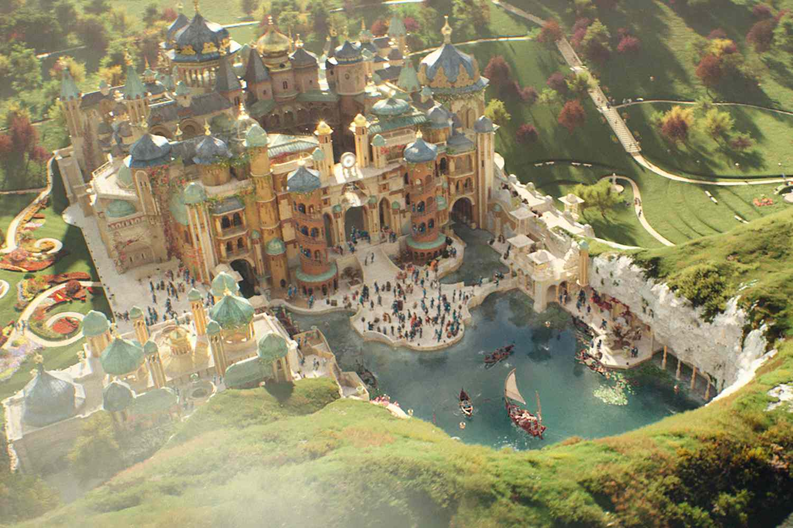

Shiz University is an institution of higher education in the city of Shiz in Glillikin, the northern province of Oz. Shiz is a co-educational university of which Madame Morrible is the headmistress, and where all of the main characters study. It is somewhat cliquish, as Elphaba is ostracized for her looks and ways while Galinda is easily the most popular girl in school. No two students' outfits are alike, except for the colors of dark blue and white. This is to show that they may think they are all individuals but are actually all the same.